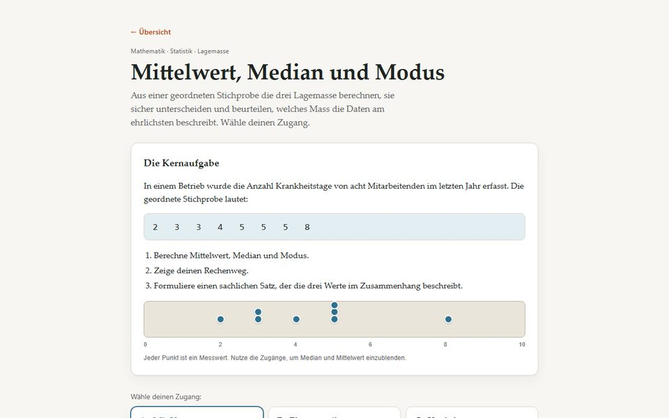
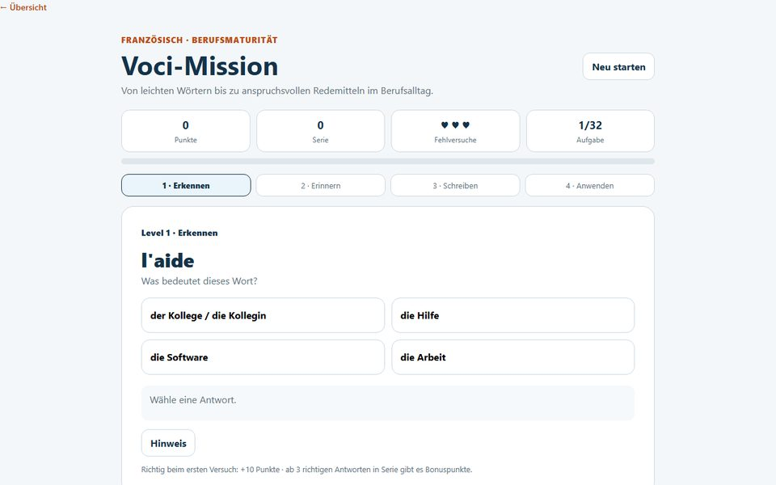
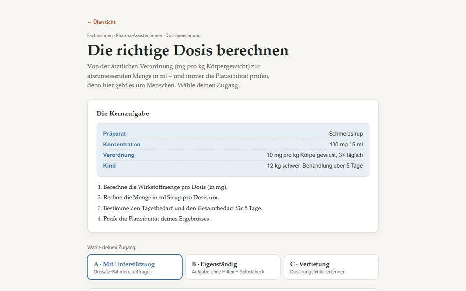
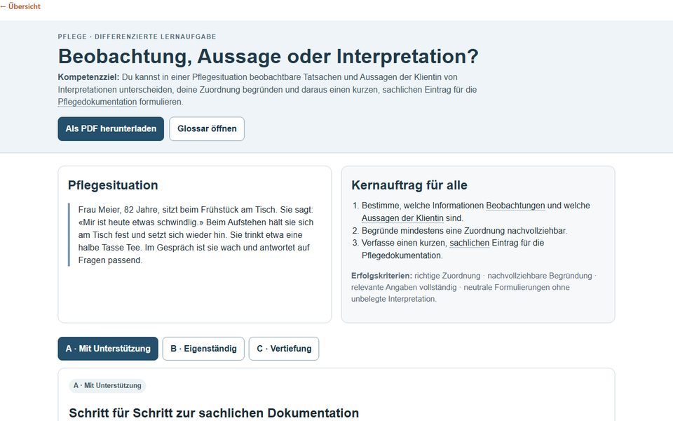
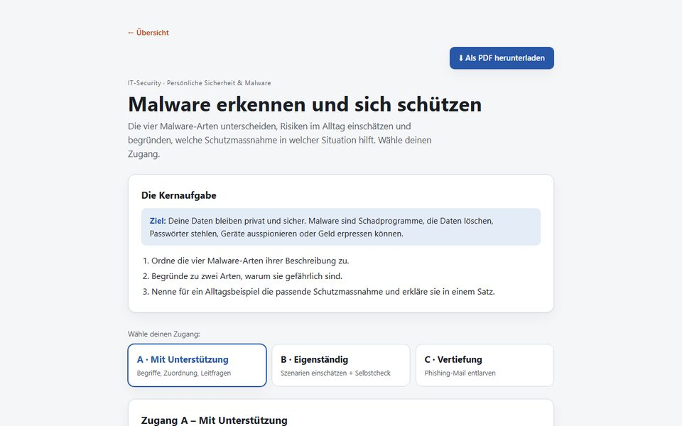
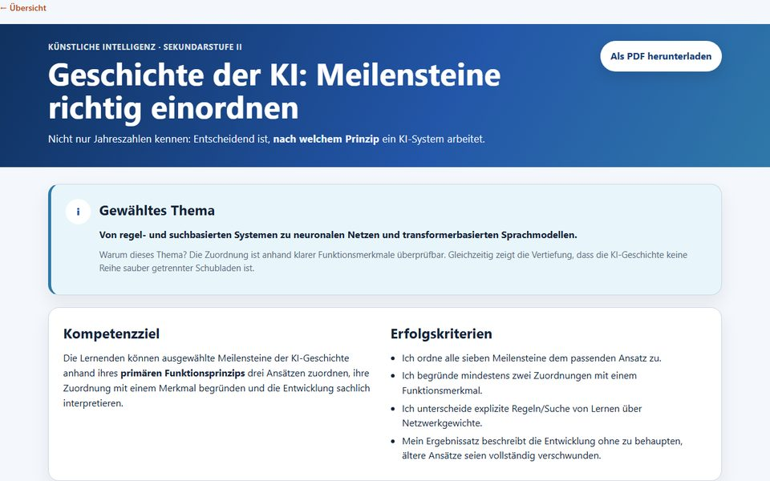

Für Lehrpersonen in der Schweiz
Aus deinem Unterrichtsmaterial entstehen interaktive Lernseiten, Prüfungsvorbereitungen, Lernspiele und Lernhilfen: mit Selbstkontrolle für die Lernenden und Lösungen für dich. Auf Wunsch begleitet ein KI-Coach die Lernenden beim Lösen, ohne Lösungen zu verraten.
«Produkt ohne Prozess stirbt.»
Technik wird erst dann Unterricht, wenn sie didaktisch strukturiert und einbettbar ist. Deshalb bauen alle Seiten aus Lernwege auf Differenzierung, Selbstkontrolle und einem klaren Arbeitsauftrag auf, nicht auf einem Chatfenster. Und der Coach fragt nach, statt vorzusagen.
Werkzeuge
Die Generatoren bauen den Prompt. Den schickst du mit deinem Material an deinen KI-Chat. Wer es ohne Umweg will, erzeugt die Seite im geschützten Bereich.
Differenzierung mit wählbaren Zugängen, Sozialform, Sprache, Twist und Niveau, dazu Schnellstart-Vorlagen. Prompt kopieren, im eigenen KI-Chat verwenden. Erzeugt eine interaktive Lernseite.
Bilder für Lernaufgaben beschreiben: Lernziel, Motiv, Bildaufbau, Anforderungen. Mit Arbeitsauftrag und Stolperstein-Check.
Material hochladen, Zugänge, Sozialform und Aufgaben wählen, fertige Seite erhalten: Lernseite, Arbeitsblatt, Prüfungsvorbereitung, Lernspiel oder Lernhilfe. Mit Sammlung, Freigabelink, Word- und Moodle-Export, Bildern und dem Coach als Zusatzoption.
Was entsteht
Du lädst Skript, Folien oder PDF hoch oder beschreibst das Thema, dann wählst du, was entstehen soll. Jede Seite ist eine einzelne Datei im gleichen ruhigen Design, läuft offline und hat einen ausklappbaren Bereich für die Lehrperson.
Eine Kernaufgabe, mehrere Wege: du wählst die Zugänge nach Niveau, Lerntyp oder Berufsfeld, dazu Sozialform und Sprache. Jede Eingabe gibt sofort Rückmeldung, ohne die Lösung zu verraten.
Dieselben Zugänge wie die Lernseite, aber für Papier: jeder Zugang auf einer eigenen Seite, mit Schreibplatz, Selbstcheck zum Ankreuzen und Lösungsblatt. Zum Drucken oder als Word.
Aus dem Prüfungsstoff werden Lernziele. Die Lernenden schätzen sich ein, schreiben eine Übungsprüfung mit Timer und Note und schliessen Lücken mit Merkblock, Übung und Lernplan.
Erkennen, Erinnern, Anwenden, Meistern: 24 bis 28 Aufgaben aus dem Material mit Punkten, Serie und Leben. Fürs Einzeltraining oder den Wettkampf in Gruppen.
Das Wichtigste auf einer A4-Seite, Lernkarten zum Umdrehen und ein Glossar mit Suche. In vereinfachter Sprache auch als Nachteilsausgleich.
Bilder mit Lernauftrag, eine Sammlung zum Teilen mit Schule oder Pool, Freigabe- und Klassenlink ohne Konto für Lernende, Export als Word, SCORM oder direkt in Moodle.
Zusatzoption
Lernende, die eine Seite über den Freigabelink öffnen, können einen KI-Coach fragen. Er kennt die Aufgaben und deine Lösungen, hält sie aber zurück.
Erst eine Verständnisfrage, dann ein Hinweis zur Strategie, dann der kleinste nächste Schritt. Nie das Ergebnis, höchstens drei Sätze, immer mit einer Frage am Schluss. Richtige Zwischenschritte bestätigt er und fragt nach dem Warum. «Sag mir die Lösung» führt zurück zur Aufgabe.
Stil wählbar: streng sokratisch, gestufte Hilfe oder Erklär-Coach für Lernhilfen. KI nach Wahl, Standard ist Infomaniak in der Schweiz. In der Übungsprüfung ist der Coach stumm. Du siehst anonym, zu welchem Teil die meisten Fragen kamen.
Das Gespräch bleibt im Browser-Tab der Lernenden. Gezählt werden nur Anzahl und Umfang der Nachrichten. Der Coach fragt nie nach Namen oder persönlichen Angaben. Enthalten im Abo mit Lerncoach, CHF 12 im Monat oder CHF 90 im Jahr.
Zugang mit CoachSo entsteht eine Seite
Im geschützten Bereich direkt. Wer erst schauen will, baut mit dem kostenlosen Prompt-Generator eine Lernseite im eigenen KI-Chat.
01
PDF, Word, Foliensatz oder eine kurze Themenbeschreibung. Mehr braucht es nicht.
02
Lernseite, Prüfungsvorbereitung, Lernspiel oder Lernhilfe. Dazu Fach, Stufe, Sprache und bei Lernseiten die didaktischen Achsen.
03
Die KI baut die Seite im Lernwege-Design mit Selbstkontrolle und Lehrpersonen-Bereich. Ein bis acht Minuten, je nach Typ.
04
Per Link oder QR-Code teilen, in Moodle legen, als Word drucken oder die Datei weitergeben. Auf Wunsch den Coach dazuschalten.
So kommen die Seiten zu den Lernenden
Das Abo gehört der Lehrperson. Lernende öffnen die Seiten im Browser, auf dem Handy oder am Schul-PC, ohne Anmeldung.
01
In deiner Sammlung bei einer Seite auf «Freigeben» klicken. Du erhältst einen Link und einen QR-Code.
02
Link in Moodle, Teams oder per Mail verschicken, QR-Code an die Wand projizieren oder aufs Arbeitsblatt drucken.
03
Für eine ganze Klasse eine Adresse anlegen, die alle freigegebenen Seiten zeigt. Jederzeit erweitern oder zurückziehen, Lernende müssen nichts merken.
Beispiele
Lernseiten, die mit Lernwege und eigenem Material entstanden sind. Öffnen, ausprobieren, als Vorlage für das eigene Fach nehmen.

Mathematik · Berufsmaturität
Lagemasse berechnen und beurteilen, welches Mass die Daten am ehrlichsten beschreibt.

Französisch · Spiel
Vokabeltraining in vier Levels: erkennen, erinnern, schreiben, anwenden. Mit Punkten und Serie.

Pharma-Assistenz
Von mg/kg zur ml-Menge. Vertiefung: Dosierungsfehler erkennen, bevor sie zur Kundschaft gelangen.

Pflege
Beobachtung, Aussage oder Interpretation? Formulierungen unterscheiden und korrekt dokumentieren.

IT-Sicherheit
Malware-Arten zuordnen, Szenarien einschätzen. Vertiefung: eine Phishing-Mail entlarven.

Künstliche Intelligenz
Meilensteine einordnen. Vertiefung: nach welchem Prinzip ein System arbeitet.
Bilder für Lernaufgaben
KI-Bilder mit Lernziel, Prompt und Arbeitsauftrag. Alle fiktiv und als solche gekennzeichnet.
Zugang
CHF 8 im Monat oder CHF 60 im Jahr. Mit Coach CHF 12 oder CHF 90.
Einführungspreise, gültig für Bestellungen bis 31. Januar 2027. Inklusive Mehrwertsteuer.
Zugänge für alle Lehrpersonen einer Institution auf Rechnung. Anmeldung mit dem Microsoft-365-Schulkonto, Teilen nur innerhalb der eigenen Schule.
Angebot anfragen